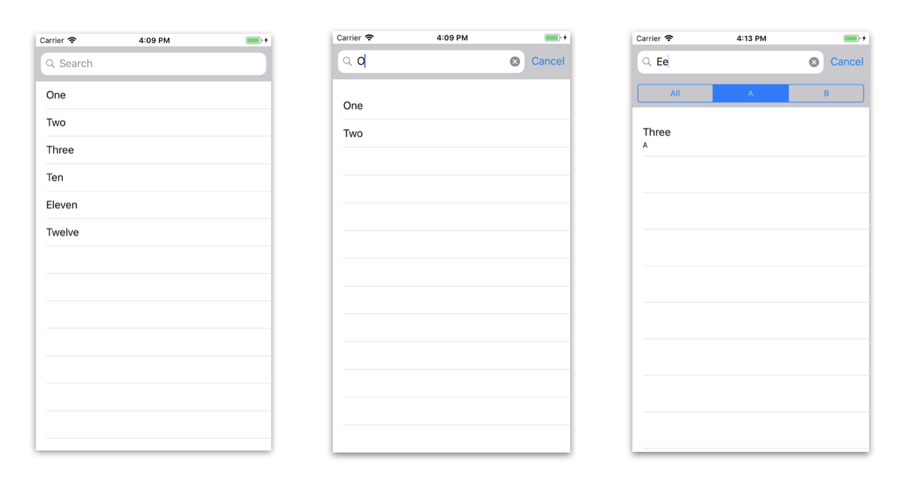
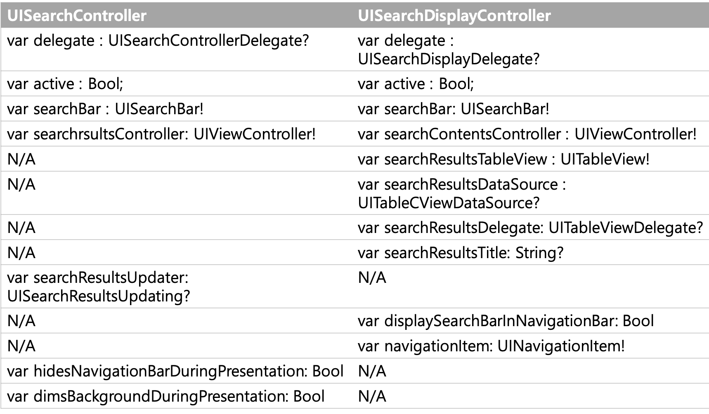
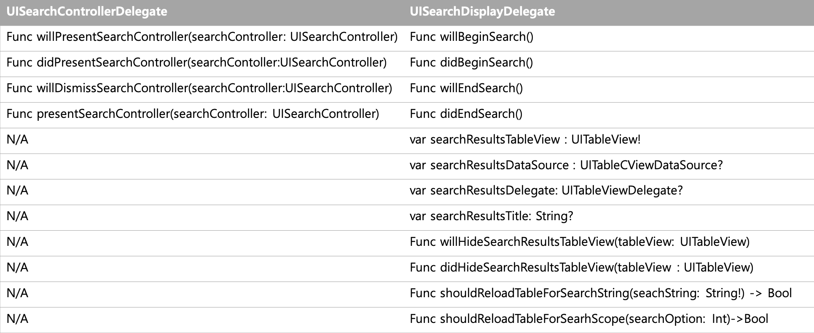
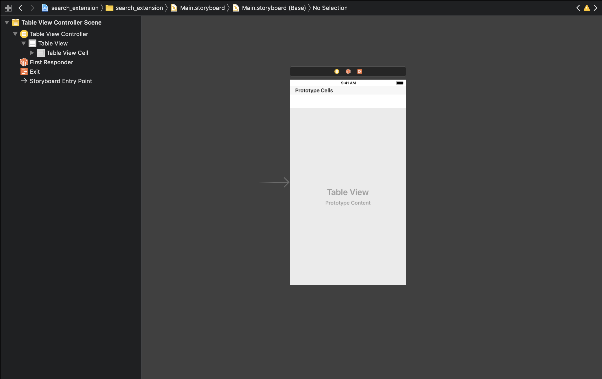
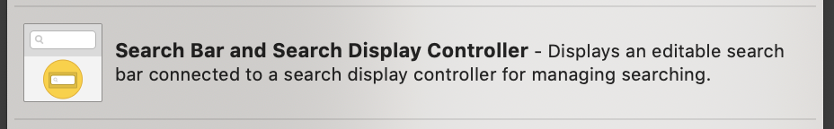

<!DOCTYPE html>
<html lang="en">

<head>
  <meta charset="utf-8">
  <meta http-equiv="X-UA-Compatible" content="IE=edge">
  <meta name="viewport" content="width=device-width, initial-scale=1">
  <meta name="description" content="">
  <meta name="author" content="">
  <link rel="shortcut icon" href="../../assets/ico/favicon.ico">

  <title>UISearchController로 검색 개발하기</title>

  <!-- Bootstrap core CSS -->
  <link href="../../assets/css/bootstrap.css" rel="stylesheet">

  <!-- Custom styles for this template -->
  <link href="../../assets/css/blog.css" rel="stylesheet">
  <link href="../../assets/css/font-awesome.min.css" rel="stylesheet">


  <!-- Just for debugging purposes. Don't actually copy this line! -->
  <!--[if lt IE 9]><script src="../../assets/js/ie8-responsive-file-warning.js"></script><![endif]-->

  <!-- HTML5 shim and Respond.js IE8 support of HTML5 elements and media queries -->
  <!--[if lt IE 9]>
      <script src="https://oss.maxcdn.com/libs/html5shiv/3.7.0/html5shiv.js"></script>
      <script src="https://oss.maxcdn.com/libs/respond.js/1.4.2/respond.min.js"></script>
    <![endif]-->

  <script src="../../assets/js/modernizr.js"></script>
  <!-- Global Site Tag (gtag.js) - Google Analytics -->
  <script async src="https://www.googletagmanager.com/gtag/js?id=UA-107692655-1"></script>
  <script>
    window.dataLayer = window.dataLayer || [];
    function gtag() { dataLayer.push(arguments); }
    gtag('js', new Date());

    gtag('config', 'UA-107692655-1');
  </script>
</head>

<body>

  <!-- Fixed navbar -->
  <div class="navbar navbar-default navbar-fixed-top" role="navigation">
    <div class="container">
      <div class="navbar-header">
        <button type="button" class="navbar-toggle" data-toggle="collapse" data-target=".navbar-collapse">
          <span class="sr-only">Toggle navigation</span>
          <span class="icon-bar"></span>
          <span class="icon-bar"></span>
          <span class="icon-bar"></span>
        </button>
        <a class="navbar-brand abc" href="index.html">
      </div>
      <div class="navbar-collapse collapse navbar-right">
        <ul class="nav navbar-nav">
          <li><a href="../../index.html" style="margin-left: 30px; font-size: inherit;">홈</a></li>
          <li><a style="margin-left: 30px; font-size: inherit;" href="../../about.html">소개</a></li>
          <li><a style="margin-left: 30px; font-size: inherit;" href="../../portfolio.html">수강생작품</a></li>
          <li><a style="margin-left: 30px; font-size: inherit;" href="mailto:codershigh@lingostar.co.kr?subject=CodersHigh%20웹사이트를%20통해%20연락드립니다">문의</a></li>
          <li class="active"><a style="margin-left: 30px; font-size: inherit;" href="../../techblog_list.html">기술블로그</a></li>
          <li><a style="margin-left: 30px; font-size: inherit;" href="../../edublog_list.html">교육블로그</a></li>
        </ul>
      </div>
      <!--/.nav-collapse -->
    </div>
  </div>


  <!-- *****************************************************************************************************************
	 BLUE WRAP
	 ***************************************************************************************************************** -->
  <div id="blue">
    <div class="container">
      <div class="row">
        <h3>코더스하이 기술블로그</h3>
      </div><!-- /row -->
    </div> <!-- /container -->
  </div><!-- /blue -->


  <!-- *****************************************************************************************************************
	 BLOG CONTENT
	 ***************************************************************************************************************** -->

  <div class="container">
    <div class="row">
      <!-- SINGLE POST -->
      <div class="header">
        <p align="center">
          <csmall>이 글의 저작권은 글쓴이에게 있으며, 배포는 코더스하이가 합니다.</csmall>
        </p>

        <!--<p></p>-->

        <a href="single-post.html">
          <h2 class="htitle">UISearchController로 검색 개발하기</h2>
        </a>
        <p>
          <csmall>Posted: September 13, 2018.</csmall> | <csmall2>By: Quino0627 (dongwook627@gmail.com)</csmall2>
        </p><br>
        
      </div>


      <div class="article">
        <!-- POST 시작  -->
        
        <h3>시작하기에 앞서</h3><br><br>
        <p class="imagecenter text-md">이번 기술 블로그에서는 <b>UISearchController</b>를 이용하여 <b>Search Bar</b> 를 개발하는 방법을 알려드리고, 이를 이용하여 간단한 검색 어플리케이션 예제를 제작해 볼 것입니다.
           <b>Search Bar는 여러 데이터의 모음(collection)에서 검색을 하기 위해 사용되는 인터페이스</b>입니다. 테이블이 있는 대부분의 어플리케이션에서 검색 기능이 있는 것을 볼 수
          있을 것입니다. iOS8부터 search bar API가 업데이트되었습니다. 본 블로그에서는 API의 변경점에 대해 알아본 후 새로운 API를 이용하여 search bar를 구현하여 볼
          것입니다.
          Search Bar를 어플리케이션에 구현할 때의 가이드라인은 <a href="https://developer.apple.com/design/human-interface-guidelines/ios/bars/search-bars/">Search
            Bars - Human Interface Guidelines</a>에서 확인할 수 있습니다.
        </p><br><br>
        <h3>iOS 8 이전 - UISearchDisplayController</h3><br><br>
        <p class="imagecenter text-md">
          아래 다이어그램은 현재는 <b>deprecated</b>된 UISearchDisplayController class와 관련된 delegate를 정리한 것입니다. <br><br>
           <br>
          IOS 8 이전에는 search bar를 다룸에 있어서 UISearchDisplayController class와 delegate를 이용하였습니다. 유저가 검색을 활성화하면
          search display controller가 기존의 내용 위에 search result view를 보여주는 방식으로 동작하였고, <b>현재 이 방법은 더이상 추천되지 않습니다.</b>
        </p>
        <br><br>
        <h3>iOS 8이후 - 새로 등장한 UISearchController</h3>
        <br><br>
        <p class="imagecenter text-md">
          2014년 WWDC에서 애플은 검색과 관련된 새로운 클래스를 소개합니다. <br> <a href="https://developer.apple.com/videos/play/wwdc2014/228/">관련
            정보 - A Look Inside Presentation Controllers</a><br><br>
             <br>
          UISearchDisplayController가 <b>UISearchController</b>로 변경되었습니다. UISearchDisplayDelegate를
          <b>UISearchControllerDelegate</b>가 대체하면서 간단해진 것을 볼 수 있습니다. 또한 <b>UISearchResultsUpdating</b>이라 명명된 새로운 프로토콜이 등장합니다.
          <br>
          일단은, 아래에서 이전 클래스와 무엇이 달라졌는지 살펴보겠습니다.


        </p>
        <h3>두가지 비교하기<br><br></h3>

        <p class="imagecenter text-md">
          Apple은 기존의 UISearchDisplayController에서 업데이트된 UISearchController를 iOS8부터 제공하고 있습니다.
          이 두 가지 방법은 모두 controller와 함께 delegate, property, search bar를 제공하지만, 몇 가지의 주요한 차이점이 있습니다.
        </p>
        <h4>[UISearchController vs UISearchDisplayController]</h4><br>
        <p class="imagecenter text-md">

          
          우선, Controller의 차이점을 살펴볼 수 있습니다. 새로운 UISearchController는 기존에 UISearchDisplayController에 존재하였던 UITableView
          속성들을 제거하였습니다. 그리고 검색 결과가 어떻게 표시될지를 UISearchResultsUpdating protocol를 이용하여 제어하게 하였습니다.이 방법은 우리에게
          UICollectionView 를 이용하여 결과를 제공하게 하는 등의
          유연성을 제공합니다. 또한 <b>UISearchResultsUpdating</b>이라는 새로운 프로토콜이 등장합니다. <br><br>
           <br>
        </p>
        <h4>[UISearchControllerDelegate vs UISearchDisplayDelegate]</h4><br>
          <br><br>
          <p class="imagecenter text-md">
           기존의 UISearchDisplayDelegate과 새로운 UISearchControllerDelegate 모두 검색을 시작할 때와 종료할 때의
          메소드를 제공하지만, UISearchControllerDelegate에서는 present, dismiss 메소드가 오직 searchController가 자동으로 present 혹은 dismiss될
          때만 실행됩니다. 또한 Delegate에서도 UITableView와 관련된 메소드들이 삭제되었습니다.
          <br><br>
           <br>
        </p>
          <br><br>


        </p>
        <h3>delagate의 이해<br><br></h3>
        <p class="imagecenter text-md">
          새롭게 나타난 대리자들에 대해 자세히 알아보면서, 변경점이 없었던 UISearchBarDelegate도 함께 살펴보겠습니다.
        </p>
        <h4>[UISearchResultsUpdating]</h4><br>
        <p class="imagecenter text-md">
          <strong>UISearchResultsUpdating 프로토콜은 search bar에 입력되는 정보에 따라 검색 결과를 업데이트합니다. </strong> <br>
          <code>searchController.searchResultsUpdater = self</code>와 같은 식으로 검색 결과를 업데이트할 때 이용할 뷰 컨트롤러를 선택할 수 있습니다.
          이 프로토콜은 한 개의 메소드를 가지고 있습니다. updateSearchResults(for: UISearchController) 메소드는 search bar의 내부를 변경시키거나 search
          bar가 첫 번째 responder가 되는 경우에 호출됩니다. 이 함수 내부에 검색 키워드에 따른 검색 결과를 업데이트하는 로직을 작성할 수 있습니다.
        </p><br>

        <h4>[UISearchControllerDelegate]</h4><br>
        <p class="imagecenter text-md">
          <strong>UISearchControllerDelegate는 search controller가 present되거나 dismiss될 때의 메소드를 제공합니다.</strong> <br>
          <code>searchController.delegate = self</code>처럼 선언할 수 있습니다.
        </p>
        <br>
        <h4>[UISearchBarDelegate]</h4><br>
        <p class="imagecenter text-md">
          <strong>UISearchBarDelegate 프로토콜은 search bar에 대한 선택적인 메소드를 제공하여 더 많은 기능을 추가할 수 있습니다.</strong>
          Editing Text의 시작과 종료, Clicking Buttons, Scope Button 등에 대한 정보를 제공합니다. <br>
          <code>UISearchBarController.searchBar.delegate = self</code>와 같은 식으로 선언합니다. 예를 들어, 우리는 이 대리자를 이용하여 scope가
          변화되었을 때의 기능을 추가해줄 수 있습니다. 세부적인 기능은 아래와 같습니다. <br>
          
        </p>
        <br>
        <h4>[UISearchContainerViewController]<br><br></h4>
        <p class="imagecenter text-md">
          <a href="https://developer.apple.com/documentation/uikit/uisearchcontainerviewcontroller">UISearchContainerViewController</a>과
          관련한 애플의 개발 가이드라인을 보게 되면 search controller 객체를 네비게이션 컨트롤러의 스택에 push 하거나, 다른 container view controller의 child로
          사용하지 말라고 하고 있습니다. 그렇게 사용하고자 할 때 이 클래스의 인스턴스에 search controller을 담아서 사용할 수 있습니다.
        </p>
        <br><br><br>

        <h1>시작하기</h1> <br>
        <p class="imagecenter text-md">
          이제부터 UISearchController을 이용하여 searchBar를 <b>구현하겠습니다.</b> 우선 기본적인 검색을 만든 후 scope를 추가한 검색까지 구현해 볼 것입니다. 각각의 예제 파일은 <a
            href="https://github.com/quino0627/searchbar-2">Basic Search Repository</a>와 <a href="https://github.com/quino0627/searchbar-2/tree/scope">Search
            with scope Branch</a>에서 확인할 수 있습니다.
        </p>

        <br>
        <h3>STEP 1. SetUp</h3><br><br>
        <h4>[Setup Interface Builder]</h4><br>
        <p class="imagecenter text-md">
          다음과 같이 <code>Table View Controller</code>를 만들고 <code>initial View Controller</code>로 설정합니다.<br>
          
        </p>
        <br>
        <h4>[Setup Data]</h4><br>

        <p class="imagecenter text-md">Search Bar를 사용하기 위해서는 우선적으로 <strong>검색할 데이터 집합</strong>이 있어야 합니다. 일단 SearchBar
          저장소 안에 새로운 저장소를 만들고, 그 안에 새로운 클래스 파일을 생성하여 모델 데이터를 만들겠습니다. 그 안에 다음과 같이 <code>Data</code> 클래스를
          작성합니다. 우리는 굉장히 간단한 데이터 클래스를 만들었습니다. 이 클래스는 두 개의 프로퍼티를 가지고 있습니다. 추후 cell의 textlabel에 나타나질 main 프로퍼티와 scope 설정에
          사용될 열거형 타입의 detail 프로퍼티가 그것입니다.

          <script src="https://gist.github.com/quino0627/68723b566c4d987621887f422a4b0735.js"></script>
          <br>

          <p class="imagecenter text-md">작성한 클래스의 인스턴스들을 추후 테이블에 나타낼 수 있도록 <code>deviceArray</code>에 추가하여 줍니다. <code>currentDeviceArray</code>는
            Search Bar를 이용하여 검색할 때 나타날 수 있도록 필터링 된 데이터를 저장하는 배열입니다. </p>


          <h4>[Setup SearchController]</h4><br>

          <p class="imagecenter text-md">
             <br> 이전에는
            <code>UISearchDisplayController</code>를 인터페이스 빌더에서 작업할 수 있었습니다. 이것은
            <code>UISearchBar</code>과 <code>UISearchDisplayController</code>, 그리고 몇몇 delegate를 설정해서 search bar를 구현하게 도와주었습니다. 하지만 <code>UISearchController</code>는
            인터페이스 빌더에서 만드는 것을 지원하지 않습니다. 그래서 이것은 code로 작업하여야 합니다. 우선, <code>UISearchController</code>과 결과를 표시할 <code>result View
            Controller</code>를 선언하고 초기화합니다.
          </p>
          <script src="https://gist.github.com/quino0627/46fcd124991d9e6d6e23e441af487fc8.js"></script>
          <p class="imagecenter text-md">
            이제 search bar과 관련된 대리자를 연결해 주어야 합니다. <code>viewDidLoad</code> 함수에 다음을 추가합니다. <code>searchResultsController</code>로 <code>resultVC</code>를 설정합니다.
            테이블뷰에 <code>searchBar</code>를 추가합니다. 그리고 대리자를 연결합니다. 본 프로젝트에서는 대리자를 모두 <code>self</code>로 설정해 주었습니다. <code>resultVC</code>로 해주어도 무방합니다.
          </p>
          <script src="https://gist.github.com/quino0627/a7c8ffcbe06c7968ffa30da50e61719d.js"></script>
          <br>
          <h4>[Setup ResultController]</h4><br>

          <p class="imagecenter text-md">이제 해야할 것은 검색 결과를 띄울 <code>result ViewController</code>를 세팅하는 것입니다. 테이블 뷰의
            <code>delegate</code>를
            <code>self</code>로 설정하여 <code>TableViewController</code>에서 테이블 대리자를 함께 다루도록 하겠습니다. <code>viewDidLoad</code>에 다음을
             추가합니다.
            <script src="https://gist.github.com/quino0627/47a2c0c82f6250c0ea12680b8df4f9e1.js"></script>
          </p>

          <br>

          <h3>STEP 2. Implement delegate</h3><br><br>

          <h4>[UISearchResultsUpdating]</h4><br>
          <p class="imagecenter text-md">검색 delegate를 구현함에 있어서 실질적으로 검색 기능을 가능하게 하는 logic을 작성하는 과정입니다. <code>filter</code>는 순차 작업을 수행하는 함수로, <code>dataArray</code>를 기반으로 새로운 배열 <code>filteredData</code>를 반환합니다. <code>filter</code>에 대한 정보를 더 얻고 싶으시다면 <a href="https://developer.apple.com/documentation/swift/array/2994718-filter">Apple Developer</a> 페이지를 참고하시기 바랍니다.
          </p>
          <script src="https://gist.github.com/quino0627/0da4d3a48e275a187d6dbc34b8fbaf29.js"></script>

          <br>
          <br>
          <h3>STEP 3. Table에 결과 보여주기</h3><br>
          <p class="imagecenter text-md">
            테이블의 Delegate를 구현하여 검색 결과를 출력하는 것을 구현해야합니다. <code>View Controller.tableView</code>와 <code>resultsController.tableView</code>의
            delegate를 모두 <code>self</code>로 초기화하였기 때문에 이 클래스 파일 안에서 두 테이블을 모두 제어할 수 있습니다. <b>삼항연산자</b>를 이용하여 간단하게 <code>tableView</code>에
            따라 출력 결과를 조절할 수 있습니다.
          </p>
          <script src="https://gist.github.com/quino0627/8030cbe145987280ecee370c1717e38c.js"></script>
          <br>

          <h3>추가</h3> <br>
          <p class="imagecenter text-md">
            지금까지 기본적인 Search Bar의 구현해 보았습니다. 지금부터는 Search Bar를 커스터마이즈 하는 것 중 많이 사용되는 범위 설정(Scope)에 대해 추가적으로 구현해 보겠습니다. 앞서 잠시
            언급하였지만, <code>UISearchBarDelegate</code>를 이용하면 Scope의 범위가 바뀔 때 결과 값을 업데이트할 수 있습니다.
          </p>
          <h4>[Scope 표시]</h4><br>
          <p class="imagecenter text-md">
            func searchBar(_ searchBar: UISearchBar, selectedScopeButtonIndexDidChange selectedScope: Int) 는 scope의 선택이
            바뀌었을 때 알려주는 함수입니다.
          </p>
          <script src="https://gist.github.com/quino0627/bf1e0834a3df42e7b1c3a91dc3e25a10.js"></script>

          <h4>[테이블 업데이트]</h4><br>
          <p class="imagecenter text-md">
            각 데이터의 scope에 해당하는 정보를 cell에 추가로 나타나게 하기 위해 cell style을 subtitle으로 변경해 주고, <code>detailTextLabel</code>에 값을 나타내도록 수정해
            줍니다.
          </p>
          <script src="https://gist.github.com/quino0627/61c59249f8a9928ccd54656e014a2684.js"></script>
          <h2>마치며</h2><br><br>
          <p class="imagecenter text-md">지금까지 <code>UISearchController</code>을 이용하여 Search Bar를 개발하는 방법에 대해서 살펴보았습니다.
            위 방법을 이용하면 기본적인 검색 기능을 갖춘 어플리케이션을 개발할 수 있습니다.
            프로젝트 전체 코드는 <a href="https://github.com/quino0627/searchbar-2">Github repository</a>에서 확인하실 수 있습니다. 본 포스트에
            대한 제안 사항이나 궁금하신 점이 있다면 언제든지 연락 주세요.

            <p align="center">
              <csmall>이 글의 저작권은 글쓴이에게 있으며, 배포는 코더스하이가 합니다.</csmall>
            </p>
            <div class="spacing"></div>

            <!--<h6>SHARE:</h6>
		 		<p class="share">
		 			<a href="#"><i class="fa fa-twitter"></i></a>
		 			<a href="#"><i class="fa fa-facebook"></i></a>
		 			<a href="#"><i class="fa fa-tumblr"></i></a>
		 			<a href="#"><i class="fa fa-google-plus"></i></a>
		 		</p>-->
      </div><!-- /col-lg-12 -->
    </div><!-- /row -->
  </div><!-- /container -->
  </div>

  <!-- *****************************************************************************************************************
 	 FOOTER
 	 ***************************************************************************************************************** -->
  <div id="footerwrap">
    <div class="container">
      <div class="row">
        <div class="col-xs-4">
          <h4 class="footer">회사 소개</h4>
          <div class="hline-w"></div>
          <p>코더스하이는 iOS/macOS 교육 콘텐츠 제작 그룹입니다.</br>
            코더들이 짜릿한 즐거움을 느끼도록 하는 것이 우리의 목표입니다.</p>
        </div>
        <div class="col-xs-4">
          <h4 class="footer">소셜 네트워크</h4>
          <div class="hline-w"></div>
          <p>
            <a href="https://www.facebook.com/codershighteam/"><i class="fa fa-facebook"></i></a>
            <a href="http://us3.campaign-archive1.com/home/?u=0823b2402b36f258c57c2d2d4&id=e066983150">
              
            </a>
          </p>
        </div>
        <div class="col-xs-4">
          <h4 class="footer">회사 위치</h4>
          <div class="hline-w"></div>
          <p>
            경기도 수원시 영통구 광교로 156, 광교비즈니스센터 11층<br />
          </p>
        </div>
      </div>
      <!--/row -->
      <div style="margin-top: 50px">
        <h4 class="footer">2017 ⓒ CodersHigh</h4>
        <p style="text-align: center;">대표이사 윤성관 | 사업자등록번호 740-81-00581</p>
      </div>
    </div>
    <!--/container -->
  </div>
  <!--/footerwrap -->


  <!-- Bootstrap core JavaScript
    ================================================== -->
  <!-- Placed at the end of the document so the pages load faster -->
  <script src="https://ajax.googleapis.com/ajax/libs/jquery/1.11.0/jquery.min.js"></script>
  <script src="../../assets/js/bootstrap.min.js"></script>
  <script src="../../assets/js/retina-1.1.0.js"></script>
  <script src="../../assets/js/jquery.hoverdir.js"></script>
  <script src="../../assets/js/jquery.hoverex.min.js"></script>
  <script src="../../assets/js/jquery.prettyPhoto.js"></script>
  <script src="../../assets/js/jquery.isotope.min.js"></script>
  <script src="../../assets/js/custom.js"></script>


</body>

</html>